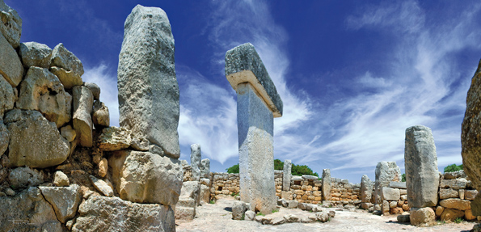
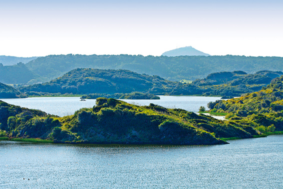
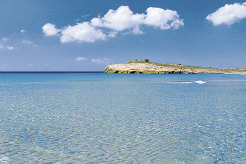

Prehistory
The prehistory of Menorca covers a large period, (Approximately 2000 years.) which stretches from the arrival of man, dated at 2100 B.C. until the arrival of the Romans in 123 B.C.
During all these years the island followed a process characterised by the increase in population and the complexity of economic and social relations, such as funeral rituals and festivals. From the beginning (1700 B.C.) the islanders were acquainted with communities from the continent, who brought objects of bronze and other products to the island.
We know about a large number of tombs built during the prehistoric period, all collective where the dead were buried with their personal effects. The most emblematic and exclusive to Menorca is the naveta. In the most well known one, the Naveta des Tudons (The vessel of the woodpigeons) 100 bodies dating from the 1X century B.C. were buried with rituals involving their hair and craniums.
The monuments that are most integrated in the countryside are the talaiots (900-700 B.C.) dry stone truncated towers built on the highest points of the community, whose principal function was to be a territorial landmark that identified the community.
Around 700/650 B.C. the final phase of the insular prehistory started with the arrival of iron. Monumental circular houses were built, and another emblematic building exclusive to the island; the taula (table) enclosure, with a T that can be as high as 4 metres. In the interior of the enclosure they celebrated ritual festivities which involved fire and wine (this was transported principally from Ibiza) and they ate lambs and kids. In this epoch the Balearic slingers participated with the Carthaginian forces in their fight against the Romans in different parts of the eastern Mediterranean during the Punic wars.